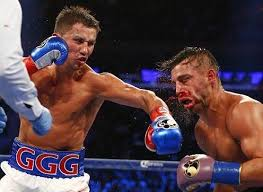
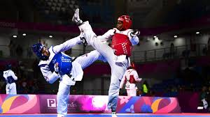
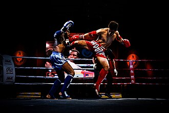
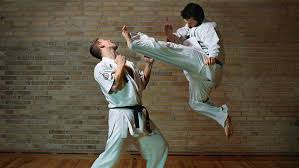
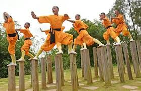

Artes Marciales Más Conocidas
En esta pagina te hablare un poco sobre algunas de las Artes Marciales más conocidas y usadas en la actualidad
Índice
Que Es Un Arte Marcial?
Un arte marcial es un sistema codificado de técnicas y tácticas utilizadas para la defensa personal o el combate, que a menudo también incluye una filosofía y valores morales. Más allá de la técnica física, las artes marciales fomentan el desarrollo personal, la disciplina, el respeto y la autoconfianza.
Boxeo
Es un deporte de combate y un arte marcial en el que dos contrincantes luchan utilizando únicamente sus puños con guantes, golpeando a su adversario de la cintura hacia arriba, dentro de un cuadrilátero especialmente diseñado para tal fin; la pelea se lleva a cabo en breves secuencias de lucha denominadas asaltos y de acuerdo a un preciso reglamento, el cual regula categorías de pesos y duración del encuentro, entre otros aspectos.
El boxeo, como deporte organizado, tiene sus raíces en la antigua Grecia, donde se practicaba como pugilato en los Juegos Olímpicos antiguos. Sin embargo, sus orígenes como actividad humana son mucho más antiguos, remontándose a la prehistoria y con registros en el antiguo Egipto. A lo largo de la historia, el boxeo ha evolucionado desde peleas a puño limpio hasta la formalización de las reglas y el uso de guantes, con figuras como Jack Broughton y el Marqués de Queensberry jugando roles clave en su desarrollo.

Taekwondo
El taekwondo es un arte marcial coreano que enfatiza las técnicas de patada, pero también incluye golpes de puño, bloqueos y movimientos defensivos. Es un deporte olímpico y una disciplina que promueve tanto el desarrollo físico como mental. La palabra "taekwondo" se descompone en "tae" (pie), "kwon" (puño) y "do" (camino o arte), lo que refleja su enfoque en el uso de pies y manos en combate, así como su camino de desarrollo personal.
Dentro de las artes marciales y deportes de combate, el taekwondo destaca por la variedad y espectacularidad de sus técnicas de patadas, siendo una de las artes marciales más efectivas y conocidas del mundo.

Muay Thai
style="text-align: center; color: yellow; font-size: 24px; font-family: 'Comic Sans MS', cursive;">El boxeo tailandés o Muay Thai como los tailandeses lo llaman, es un arte tradicional de autodefensa de los tailandeses. Es diferente de boxeo internacional porque en el estilo tailandés de lucha sin armas y se utilizan los pies, los codos, las rodillas y los puños. Por lo tanto, se asemeja más a una verdadera batalla campal que se considera superior al boxeo internacional como un arte de defensa personal. Como es más exigente, un partido de boxeo tailandés dura sólo cinco asaltos de tres minutos cada uno, con un descanso de dos minutos entre las rondas.
Desde la antigüedad los gobernantes tailandeses han concedido gran importancia a la formación de sus soldados y la gente común en las habilidades de combate cuerpo a cuerpo, con y sin armas. Mientras que el más reciente es conocido como Muay, el primero se llama Krabi-Krabong, literalmente, espada y bastón de mando, aunque las armas utilizadas no se limitan a estos dos. Muy a menudo, los propios gobernantes eran grandes luchadores fuertes, valientes y expertos en la materia.

Karate
El karate es un arte marcial japonés que utiliza técnicas de golpeo con manos, pies, codos y rodillas, así como de bloqueo y agarre, con el objetivo de desarrollar la disciplina física y mental.
El kárate tiene su origen durante el siglo XV en las artes marciales nativas de las Islas Ryukyu, (hoy día Okinawa) caracterizadas por el uso de los puños llamadas (Te / Tō-te / Toudi), siendo influenciado por técnicas provenientes de la lucha nativa; además de algunos estilos de artes marciales chinas (kung-fu) y en menor medida por otras disciplinas provenientes de otros países del sureste asiático como Tailandia, Filipinas e Indonesia. Ya, en el siglo XX este estilo marcial fue influenciado en un principio por varios conceptos técnicos, tácticos y filosóficos procedentes de algunas de las artes marciales japonesas modernas, como: el kendo, el judo, y finalmente el aikido.

Kung Fu
Kung fu, un arte marcial, es a la vez una forma de ejercicio con una dimensión espiritual derivada de la concentración y la autodisciplina, y un modo de combate personal principalmente sin armas, a menudo equiparado con el karate o el taekwondo . El término kung fu también puede significar una preparación minuciosa para la ejecución de cualquier tarea hábil sin interferencia del intelecto ni las emociones.
Como arte marcial, el kung fu se remonta a la dinastía Zhou (1111–255 a. C. ) e incluso antes. Como ejercicio, lo practicaban los taoístas en el siglo V a. C. Las posturas y acciones que prescribe se basan en observaciones minuciosas de la anatomía y fisiología muscular y esquelética humana, y requiere una gran coordinación muscular. Los diversos movimientos del kung fu, la mayoría de los cuales son imitaciones de los estilos de lucha de los animales, se inician desde una de cinco posiciones básicas de los pies: la postura erguida normal y las cuatro posturas llamadas dragón, rana, montar a caballo y serpiente.

Hasta aqui llega el listado
GRACIAS POR TU TIEMPO.
"STRIKE FIRST
STRIKE HARD
NO MERCY"
Pagina elaborada por Alejandro Galindo
Contacto:cobracont17@gmail.com
Fecha de creacion:15/06/25
Actualizacion:17/06/25
Fuentes de informacion:"https://www.britannica.com/"
"https://es.wikipedia.org/"
"https://thailatinamerica.net/"